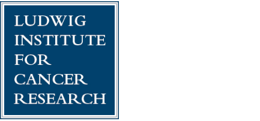
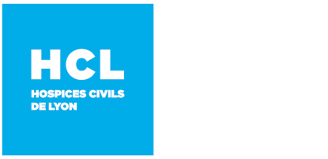
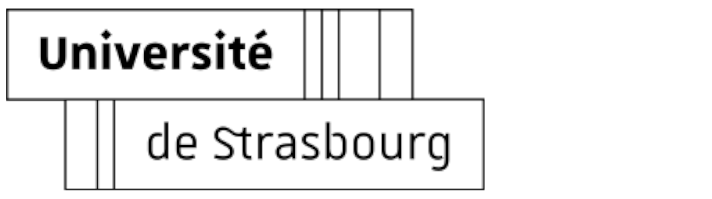

Profile summary
- PhD-qualified immunologist with 15 years of experience with a focus on immuno-oncology and cancer vaccines in the biotechnology environment
- valued experience at all stages of drug development: early discovery, IND-enabling preclinics, GLP nonclinical and biomarker supports for phase II, and GMP bioassays for phase III and drug commercialization
- h-index=18, published 6 first author + 18 co-author manuscripts in high-impact scientific journals, filled 2 international patents and active reviewer in a dozen of scientific journals
- solid expertise in immunology-based assays, animal models, molecular and cellular biology, biochemistry and flow cytometry, strong skills in data analysis and bioinformatics, and great ability to take advantage of innovative technologies, e.g., AI
- supervised and mentored technicians, students and PhD candidates, responsible for multiple technical and IT platforms
R&D experience
- development of the preclinical program for our drug candidates
- in vitro and in vivo pharmacology, pharmacokinetics and toxicology
- IND-enabling GLP program from scratch for a small molecule in ophthalmology
- extension of non-clinical package for supporting a Phase 2a clinical trial
- EMA, FDA and CDE (China) regulatory documents: pre-IND Briefing Package, Investigator Brochure, CTD (Module 2.4), IND application
- management of all the preclinical operations with CROs
GLP
pharmacology
toxicology
nonclinical
PK/PD
ocular toxicity
juvenile toxicology
DART
nonhuman primates
ICH guidelines
FDA
EMA
CDE (China)
IND
CTD
PIND
Graves' Disease
allergy
small molecules
peptides
- development of innovative bioassays in immunology and cell and gene therapy (GMP)
- training of the technical staff in flow cytometry, and human cell biology/immunology
- scientific and technical support in many projects
GMP
ddPCR
imaging cytometry
multiplex
RNAseq
NK cells
macrophages
ADCC
ADCP
gene therapy
AAV
Pentraxin-2
gantenerumab
pertuzumab
glofitamab
- responsible for the personalized neoantigen vaccine assembly for the clinical trial NECVAXNEO1
personalised medicine
DNA vaccine
glioblastoma
NGS
neoantigen discovery
epitope assembly
machine learning
- R&D and nonclinical development of the company’s oral T cell vaccine pipeline – VXM01, VXM04, VXM06, VXM10 and VXMNeo
- supervision of the immunomonitoring and histopathology GCLP analyses of our phase I/II clinical trials
- Business Development (industry, academic collaborations) and interaction with CRO partners
- regular and active participation to our Company Board and internal meetings + international congresses
DNA vaccine
preclinical
toxicology
angiogenesis
CROs
histology
bioinformatics
data science
business development
Investigator Brochure
- provision of care for my baby
- completion of a full renovation of a house within budget
- coordination and scheduling of the activities of 10+ contractors
- partnering with local community members to gain planning approvals
- taking lessons to gain specific technical skills in plumbing, electricity, carpentry, floors and painting
- updating and extending professional skills in physiology, biostatistics, and programming
becoming a Great Dad
construction work
biostatistics
Python 3
- assessment of novel tumor stroma-targeted IL-2-variant immunocytokines developped by Roche Glycart (mentor Dr. C. Klein), combined with anti-cancer therapeutics and immunomodulatory antibodies, in genetically engineered mouse models of non-small cell lung cancer
- collaborations with Prof. Dario Neri (ETHZ), Prof. M. Pittet (MGH), CureVac (mRNA cancer vaccine phase I), and VAXIMM
- deputy study director for animal licenses of the Cancer Immunology group (Prof. A. Zippelius)
IL-2v
immunocytokines
ICIs
lung cancer
LTK2
GEMM
tumor xenografts
co-culture
IHC
intratracheal
SPECT/µCT
animal licenses

- characterization of CD8 T cell responses after therapeutic vaccination of melanoma patients with antigenic Melan-A/MART-1 peptides
- prospective phase I clinical trial from the group of Prof. P. Romero, Prof. D. Speiser and Dr. N. Rufer
- mentoring of students and technical staff
- collaboration with the Molecular Modelling group of Prof. O. Michielin
TCR
tetramers
flow cytometry
sequencing
RT-PCR
microarray
single cells
cell sorting
peptides
PBMCs
T cell cloning
CTL
ELISpot
lentivirus

- initiation of a national project on the transduction of human DCs with adenovirus and enhanced presentation of HIV-1 epitopes; applications to the potentiation of an anti-HIV-1 response
- continuation of a collaborative project started in Jan. 2006 with the Laboratory of Virology & Viral Pathogenesis (Prof. P. Boulanger)
HIV
adenovirus
dendritic cells
molecular biology
grant

- development of innovative functional CD40L mimetics based on C3-symmetric peptide scaffolds, at the interface of chemistry and biology, and applications to cancer vaccines and immunotherapy
- lab manager in the Immunologie et Chimie Thérapeutiques (Prof. S. Müller), Institut de Biologie Moléculaire et Cellulaire (IBMC)
- mentoring of students and technical staff
apoptosis
confocal microscopy
SDS-PAGE
Western blot
2D gel-electrophoresis
ELISA
hybridoma
chromatography
surface plasmon resonance
dynamic light scattering
organic chemistry
mass spectroscopy
- course assistant in immunology “travaux pratiques” for B.Sc. biochemistry, Université Strasbourg I
- teaching assistant in immunobiology “travaux dirigés” for first college degree in biology, Université Strasbourg I
immunology
teaching
- IT help to all my colleagues: installation of scientific software, workshops, hardware fix (with headache), network troubleshooting
- deployment and optimization of new hardware (computers and instruments)
Windows
server
peripherals
network
installation
configuration
maintenance
troubleshooting
Competences and continuing education
Computer skills
- excellent knowledge of Microsoft Windows and Linux, including Powershell and Bash shells, e.g., WSL2, Ubuntu, Kali
- computer-savvy with strong programming capabilities (Python, R, C++, BASIC); SQL and noSQL (MySQL)
- advanced Microsoft Office, i.e., Word, Excel with VBA and Python, Power BI, PowerPoint, Access with SQL, OneNote, Teams, and SharePoint; Google Workspace
- data analysis and visualization with Python (NumPy, SciPy, pandas, matplotlib, seaborn, Bokeh, plotly, and Machine Learning with scikit-learn), R (RStudio and radian), and MATLAB
- specialized tools: Inkscape, GIMP, Photoshop, Prism, FlowJo (with R), FCS Express, DIVA, Kaluza, GeneSpring, Fiji (ImageJ), Zotero, Clone Manager
- bioinformatics: online tools and databases, R and Python libraries incl. Bioconductor and biopython, (sc)RNA-Seq pipelines, PyMOL
- cloud computing on Google Cloud Platform: Create and Manage Cloud Resources, Perform Foundational Infrastructure Tasks in Google Cloud, Perform Foundational Data, ML, and AI Tasks in Google Cloud
- collaborative/interactive working and presentations with Jupyter notebook, Markdown, Dash and GitLab; Visual Studio Code, Git, Docker
- building and deployment of full-stack websites with Django, HTML and CSS, web applications, and interactive dashboards for data visualization; design of GUIs with Qt for Python and PySide6
- openBIS digital notebook, and other data management, labbook and inventory management systems
- solid knowledges/self-educated in electronics, including basics and integrated circuits, digital electronics, microcontrollers and microprocessors (Arduino, Raspberry Pi) and MicroPython
Professional development and training
- Introduction to Molecular Modeling in Drug Discovery. Schrödinger (2023)
- Google Cloud Skills Boost Program, Google (2023–2024):
- Google Cloud Computing Foundations: Infrastructure in Google Cloud
- Google Cloud Computing Foundations: Cloud Computing Fundamentals
- Introduction to Data Analytics on Google Cloud
- Google Cloud Fundamentals for Azure Professionals: Core Infrastructure
- Google Cloud Fundamentals for AWS Professionals
- Google Cloud Big Data and Machine Learning Fundamentals
- Google Cloud Fundamentals: Core Infrastructure
- Google Cloud Essentials
- Fundation in Mathematics. Cnam, Paris (2023)
- Mathematics for Machine Learning Specialization: Linear Algebra, Multivariate Calculus, and Principal Component Analysis. Imperial College London (2019–2023)
- Chemistry for higher education. Université de Liège (2023)
- Des probabilités à l’estimation bayésienne. Centrale Nantes, France (2023)
- OpenAI Python API Bootcamp: AI, GPT3, and more. Udemy (2023)
- Quantitative Biology Workshop. MITx, USA (2022)
- Machine learning in python with scikit-learn. INRIA, France (2021)
- Introduction to statistics with Python. Swiss Institute of Bioinformatics, Switzerland (2021)
- Docker and Singularity for reproducible research. Swiss Institute of Bioinformatics, Switzerland (2021)
- Version Control with Git. Swiss Institute of Bioinformatics, Switzerland (2021)
- Transcriptomics Analysis. Swiss Institute of Bioinformatics, Switzerland (2021)
- (sc)RNAseq Data Analysis, full semester (CAMB714). PennVet, University of Pennsylvania, USA (2020)
- SQL Fundamentals Track. DataCamp, Belgium (2020)
- Bio-informatique pour la Génomique Médicale. CEA, Université de Paris, France (2020)
- IBM Data Science (Methodology, SQL, Visualization, Machine Learning). IBM, USA (2019-2020)
- Python for Research. HarvardX, USA (2018)
- Introduction à la statistique avec R. Faculté de Médecine, Université Paris Sud, France (2018)
- Reproducible Research: Methodological Principles for Transparent Science. INRIA, France (2018)
- SME Instrument Applicants Training. Euresearch, Bern, Switzerland (2018)
- Maîtriser le Shell Bash. Université de la Réunion, France (2018)
- Python 3, from basics to advanced concepts. Université Côte d’Azur, France (2018)
- Data Scientist with Python Career Track. DataCamp, Belgium (2017–2018)
- Human histology. Université de Médecine de Liège, Belgium (2017)
- Bioinformatics: Genomes and Algorithms. INRIA, France (2017)
- Création d’entreprises innovantes : de l’idée à la start-up. Université de Montpellier, France (2017)
- LTK Module 2 – Education and Training of Persons Conducting Animal Experiments. University of Zurich, Switzerland (2012). Accreditation as Study Director (Kantonale Tierschutzfachstelle, Veterinäramt Basel-Stadt).
- Animal Experimentation and Small Animal Surgery (mouse and rat). Université Strasbourg I, France (2007)
- Multicolor Cytometry: Fluorescence and Compensation. Association Française de Cytométrie, Paris (2005)
- Proteomics. Institut de Biologie Moléculaire et Cellulaire, Strasbourg, France (2005)
- Confocal Microscopy. Institut de Biologie Moléculaire des Plantes, Strasbourg, France (2004)
- Pain in Animals. Institut de Physiologie et de Chimie Biologique, Strasbourg, France (2004)
Technical skills
immunology
human PBMC
Ficoll
serum
MACS
T clones
DCs
MΦ
51Cr-release
BATDA
CTL
lentivirus
pMHC multimers
ELISA
ELISpot
multiplex immunoassays
cell biology
flow cytometry (Fortessa, Accuri, Calibur, Array, CyAn, Gallios, Attune)
FACS (Ventage, Aria)
imaging cytometry
intracellular staining
CBA
transfection
RNAi
proliferation
cell cycle
apoptosis
adherent
suspension
3D-culture
epifluorescence
confocal microscopy
time-lapse microscopy
live imaging
fluorescent IHC
H&E staining
cryosection
AAV
animal experimentation
injection (iv, sc, po, im, id, nas)
intratracheal
intrathoracic
GEMMs
tumor xenografts
tumor growth
survival
blood sampling
organ collection
lymphoid tissues
rodents
genotyping
SPECT/μCT (Bioscan)
animal licenses
molecular biology
(sc)RNA-Seq
DNA/RNA isolation
PCR
ddPCR
RT-PCR
DNA sequencing
TCR spectratyping
molecular cloning
recombinant proteins
hybridoma
insect cells
Southern blotting
Northern blotting
functional promoter
whole genome microarray (Agilent)
biochemistry
SPR (BIAcore3000)
DLS (Dynapro)
SDS-PAGE
Western blot
2D electrophoresis
SEC
peptide synthesis
MS
Research output
Publications
- Young LE, Schnieke AE, McCreath KJ, Wieckowski S, Konfortova G, Fernandes K, Ptak G, Kind AJ, Wilmut I, Loi P, Feil R. – Conservation of IGF2-H19 and IGF2R imprinting in sheep: effects of somatic cell nuclear transfer. Mech Dev. 2003; 120:1433-1442
- Wu W, Wieckowski S, Pastorin G, Benincasa M, Klumpp C, Briand JP, Gennaro R, Prato M, Bianco A. – Targeted delivery of amphotericin B to cells by using functionalized carbon nanotubes. Angew Chem Int Ed Engl. 2005; 44:6358-6362
- Wieckowski S, Fournel S, Sun W, Trouche N, Dumortier H, Bianco A, Chaloin O, Habib M, Peter JC, Schneider P, Vray B, Toes RE, Offringa R, Melief CJ, Hoebeke J, Guichard G. – C3-symmetric peptide scaffolds are functional mimetics of trimeric CD40L. Nat Chem Biol. 2005; 1:377-382. Research Highlights: Drug Discovery: Immune booster. Nature. 2005; 438:132. Immunotherapy: TNFR superfamily trimers. Nat Rev Drug Discov. 2006; 5:1
- Pastorin G, Wu W, Wieckowski S, Briand JP, Kostarelos K, Prato M, Bianco A. – Double functionalization of carbon nanotubes for multimodal drug delivery. Chem Commun (Camb). 2006; 21:1182-1184. Recognized as within the top 50 articles published in 2006 in Chem Commun.
- Bianco A, Fournel S, Wieckowski S, Hoebeke J, Guichard G. – Solid-phase synthesis of CD40L mimetics. Org Biomol Chem. 2006; 4:1461-1463
- Kostarelos K, Lacerda L, Pastorin G, Wu W, Wieckowski S, Luangsivilay J, Godefroy S, Pantarotto D, Briand JP, Muller S, Prato M, Bianco A. – Cellular uptake of functionalized carbon nanotubes is independent of functional group and cell type. Nat Nanotech. 2007; 2:108-113
- Wieckowski S, Trouche N, Chaloin O, Guichard G, Fournel S, Hoebeke J. – Cooperativity in the interaction of synthetic CD40L mimetics with CD40 and its implication in cell signaling. Biochem. 2007; 46:3482-3493
- Habib M, Chamekh M, Rivas MN, Wieckowski S, Sun W, Bianco A, Trouche N, Chaloin O, Dumortier H, Goldman M, Guichard G, Fournel S, Vray B. – Small molecule CD40L mimetics promote control of parasitemia by enhancing CD8+ cells production of interferon-γ during experimental Trypanosoma cruzi infection. J Immunol. 2007; 178:6700-6704
- Trouche N, Wieckowski S, Sun W, Chaloin O, Briand JP, Hoebeke J, Fournel S, Guichard G. – Small trivalent architectures mimicking homotrimers of the TNF superfamily member CD40L: delineating the relationship between structure and effector function. JACS. 2007; 129:13480-13492
- Rich LR, Papalia GA, Flynn PJ… Wieckowski S… Myszka DG. – A global benchmark study using affinity-based biosensors. Anal Biochem. 2009; 386:194-216
- Partidos CD, Hoebeke J, Wieckowski S, Chaloin O, Bianco A, Moreau E, Briand JP, Desgranges C, Muller S. – Immunomodulatory consequences of ODN CpG-polycation complexes. Methods. 2009; 49:328-333
- Jandus C, Bioley G, Dojcinovic D, Derré L, Baitsch L, Wieckowski S, Rufer N, Kwok WW, Tiercy JM, Luescher IF, Speiser DE, Romero P. – Tumor antigen specific regulatory CD4 T-cells identified in human metastatic melanoma: peptide vaccination results in selective expansion of Th1-like counterparts. Cancer Res. 2009; 69:8085-8093
- Wieckowski S, Baumgaertner P, Corthésy P, Voelter V, Romero P, Speiser DE, Rufer N. – Fine structural variations of αβTCRs selected by vaccination with natural versus altered self-antigen in melanoma patients. J Immunol. 2009; 183:5397-5406
- Iancu EM, Baumgaertner P, Wieckowski S, Speiser DE, Rufer N. – Profile of a serial killer: cellular and molecular approaches to study individual cytotoxic T-cells following therapeutic vaccination. J Biomed Biotech. 2011; 2011:452606
- Baitsch L, Baumgaertner P, Devêvre E, Raghav SK, Legat A, Barba L, Wieckowski S, Bouzourene H, Deplanke B, Romero P, Rufer N, Speiser DE. – Exhaustion of tumor-specific CD8+ T cells in metastases from melanoma patients. J Clin Invest. 2011; 121:2350-2360
- Wieckowski S, Speiser DE, Gupta B, Iancu EM, Baumgaertner P, Baitsch L, Michielin O, Romero R, Rufer N. – Single cell analysis reveals similar functional competence of dominant and non-dominant CD8 T-cell clonotypes. Proc Natl Acad Sci USA. 2011; 108:15318-15323
- Leimgruber A, Ferber M, Irving M, Wieckowski S, Hussain-Kahn H, Derré L, Rufer N, Zoete V, Michielin O. – TCRep 3D: an automated in silico approach to study the structural properties of TCR repertoires. PloS ONE. 2011; 6: e26301
- Lövgren T, Baumgaertner P, Wieckowski S, Devêvre E, Guillaume P, Luescher I, Rufer N, Speiser DE. – Enhanced cytotoxicity and decreased CD8 dependence of human cancer-specific T cells after vaccination with low peptide dose. Cancer Immunol Immunother. 2012; 61(6):817
- Gupta B, Iancu EM, Gannon PO, Wieckowski S, Baitsch L, Speiser DE, Rufer N. – Simultaneous coexpression of memory-related and effector-related genes by individual human CD8 T cells depends on antigen specificity and differentiation. J Immunother. 2012; 35(6):488
- Wieckowski S, Hemmerle T, Savic Prince S, Dolder Schlienger B, Hillinger S, Neri D, Zippelius A. – Therapeutic efficacy of the F8-IL2 immunocytokine in a metastatic mouse model of lung. Lung Cancer. 2015; 88(1):9
- Gannon PO, Wieckowski S, Baumgaertner P, Hebeisen M, Allard M, Speiser DE, Rufer N. – Quantitative TCR avidity assessment by NTAmers reveals melanoma antigen-specific T cell repertoires enriched for high functional competence. J Immunol. 2015; 195:356
- Schmitz-Winnenthal FH, Hohmann N, Schmidt T, Podola L, Friedrich T, Lubenau H, Springer H, Wieckowski S, Breiner KM, Mikus G, Büchler MW, Keller AV, Koc R, Springfeld C, Knebel P, Bucur M, Grenacher L, Haefeli WE, Beckhove P. – A phase 1 trial extension to assess immunologic efficacy and safety of prime – boost vaccination with VXM01, an oral T cell vaccine against VEGFR2, in patients with advanced pancreatic cancer. OncoImmunology. 2018; 7(4):e1303584
- Kashyap AS, Fernandez-Rodriguez L, Zhao Y, Monaco G, Trefny MP, Yoshida N, Martin K, Sharma A, Olieric N, Shah P, Stanczak M, Kirchhammer N, Park SM, Wieckowski S, Laubli H, Zagani R, Kasenda B, Steinmetz MO, Reinecker HC, Zippelius A. – GEF-H1 Signaling upon Microtubule Destabilization Is Required for Dendritic Cell Activation and Specific Anti-tumor Responses. Cell Rep. 2019; 28(13):3367
- Wieckowski S, Avenal C, Orjalo AV, Gygax D, and Cymer F. – Toward a Better Understanding of Bioassays for the Development of Biopharmaceuticals by Exploring the Structure-Antibody-Dependent Cellular Cytotoxicity Relationship in Human Primary Cells. Front Immunol 2020; 11: 552596
Patents
- Guichard G, Fournel S, Chaloin O, Trouche N, Wieckowski S, Hoebeke J. – Novel multimeric CD40 ligands, method for preparing same and use thereof for preparing drugs. Brevet Français 04/13331, déposant CNRS (15/12/2004); International Application PCT/FR2005/03146 (15/12/2005); International Publication WO/2006/064133 (22/06/2006)
- Guichard G, Fournel S, Trouche N, Wieckowski S. – Novel multimeric molecules, a process for preparing the same and the use thereof for manufacturing medical drugs. Brevet Français 07/00809, déposant CNRS (05/02/2007); International Application PCT/FR2008/000129 (04/02/2008); International Publication WO/2008/110695 (18/09/2008)
Communications (selection)
- Wieckowski S, Avenal C, Orjalo AV, Gygax D, and Cymer F. – A better understanding of bioassays – comparison of binding assays, reporter gene assays and primary cell-based assays of glycoengineered monoclonal antibodies. BEBPA’s Virtual 2021 EUR Bioassay Conference. Oral presentation
- Wieckowski S, Podola L, Kobl I, Smetak H, Springer M, Nugues AL, Slos P, Broadmeadow A, Chesher C, Adda Berkane A, Wei M, Breiner K, Meichle A, Breiner K, Mansour M, Beckhove P, Lubenau H.– Modulating T cell immunity in tumors by targeting tumor-associated antigens, PD-L1 and neoantigens using a versatile live attenuated oral Salmonella DNA vaccination platform. AACR Annual Meeting, Chicago, 2018. Poster 733
- Wieckowski S. – Non-clinical safety, immunogenicity and antitumor efficacy of live attenuated Salmonella Typhimurium based oral T-cell vaccines. ASGCT 20th Annual Meeting, Washington, D.C., 2017. Oral presentation #777
- Wieckowski S, Podola L, Springer M, Broadmeadow A, Stevens P, Chesher C, Adda Berkane A, Wei M, Kobl I, Meichle A, Beckhove P, Breiner K, Lubenau H. – Non-clinical safety, immunogenicity and antitumor efficacy of live attenuated Salmonella Typhimurium-based oral T-cell vaccines VXM01m, VXM04m and VXM06m. AACR Annual Meeting, Washington, D.C., 2017. Poster 4558
- Wieckowski S. –Using the immune system to treat cancer – Could we cure cancer in the next ten years? European Health Science Match; Heidelberg (Germany), 2016. Oral presentation #85
- Wieckowski S. – Therapeutic synergism of a novel tumor stroma-targeted IL-2- variant immunocytokine with standard-of- care anti-cancer therapeutics and immunomodulatory antibodies in the genetically engineered KP mouse model of non-small cell lung cancer. Roche Symposium of the Roche Postdoc Fellowship Program; Basel, 2013. Oral presentation #216
- Wieckowski S, Müller P, Freimoser-Grundschober A, Savic S, Fink Y, Karanikas V, Umana P, Pisa P, Klein C, Zippelius A. – Therapeutic synergism of a novel tumor stroma-targeted IL-2-variant immunocytokine with standard-of-care anti-cancer therapeutics and immunomodulatory antibodies in the genetically engineered KP mouse model of non-small cell lung cancer. Roche Symposium of the Roche Postdoc Fellowship Program; Penzberg (Germany), 2012. Poster RPF ID 216
- Wieckowski S, Baumgaertner P, Corthésy P, Voelter V, Romero R, Speiser D, Rufer N. – Characterization of CD8+ T cell responses induced by vaccination with Melan-A peptides in melanoma patients. Role of Inflammation in Oncogenesis and Immune Escape in Cancer joint Keystone Symposia, Keystone, CO, 2010. Poster J5-338
- Wieckowski S, Baumgaertner P, Corthésy P, Voelter V, Romero R, Speiser D, Rufer N. – Molecular characterization of CD8+ T cell responses in melanoma patients following therapeutic peptide vaccination. 4e Journée Scientifiques du Cancéropôle Lyon Auvergne Rhône-Alpes, Archamps (France), 2009. Poster P70. Best Poster Award (see also CLARA report on page 17)
- Wieckowski S, Baumgaertner P, Corthésy P, Voelter V, Romero R, Speiser D, Rufer N. – CD8 T cell responses in melanoma patients following therapeutic peptide vaccination. 1st Swiss Immunotherapy Symposium, Lausanne (Switzerland), 2009. Oral presentation
- Wieckowski S, Trouche N, Hoebeke J, Guichard G, Fournel S. – Application of functional small synthetic CD40L mimetics to lymphoma therapy. 1st joint meeting of European National Societies of Immunology, 16th European Congress of Immunology, Paris, 2006. Poster PD-3918
- Wieckowski S, Trouche N, Sun W, Chaloin O, Hoebeke J, Guichard G, Fournel S. – Improvements of small synthetic CD40L mimetics and their effects on cell signaling. MipTec – the 9th Leading European Drug Discovery Event, Basel, 2006. Poster P89
- Wieckowski S, Trouche N, Chaloin O, Bianco A, Hoebeke J, Dumortier H, Guichard G, Fournel S. – A synthetic multimeric ligand of CD40 is able to mimic effector functions of the natural CD40L. Congrès Annuel de la Société Française d’Immunologie, Paris, 2004. Poster P50
Congress abstracts
- Wieckowski S, Podola L, Smetak H, Nugues AL, Slos P, Berkane AA, Wei M, Breiner K, Meichle A, Beckhove P, Mansour M, Lubenau H. – Modulating T cell immunity in tumors by targeting PD-L1 and neoantigens using a live attenuated oral Salmonella platform. Cancer Res. 2018; 78(13 Supplement):733-733
- Wick W, Wick A, Sahm F, Riehl D, von Deimling A, Bendszus M, Kickingereder P, Bonekamp D, Beckhove P, Schmitz-Winnenthal FH, Jungk C, Wieckowski S, Podola L, Herold-Mende C, Unterberg A, Platten MJ. – VXM01 phase I study in patients with progressive glioblastoma: Final results. J Clin Oncol. 2018; 36(15_suppl):2017-2017
- Wieckowski S, Smetak H, Kobl I, Podola L, Nugues AL, Slos P, Berkane AA, Wei M, Breiner K, Meichle A, Mansour M, Schroff M, Beckhove P, Lubenau H. – Live attenuated oral Salmonella platform for effective T- and B-cell targeting of PD-L1. J Clin Oncol. 2018; 36(5_suppl):74-74
- Wieckowski S, Podola L, Springer M, Kobl I, Koob Z, Mignard C, Berkane AA, Wei M, Meichle A, Breiner K, Schroff M, Beckhove P, Lubenau H. – Immunogenicity and antitumor efficacy of live attenuated Salmonella typhimurium-based oral T-cell vaccines VXM01m, VXM04m and VXM06m. Cancer Res. 2017; 77(13S):Abstract nr 4558
- Wick W, Wick A, Nowosielski M, Sahm F, Riehl D, Arzt M, von Deimling A, Bendszus M, Kickingereder P, Bonekamp D, Beckhove P, Schmitz-Winnenthal FH, Jungk C, Wieckowski S, Herold-Mende C, Lubenau H, Unterberg A, Platten MJ. – VXM01 phase I study in patients with resectable progression of a glioblastoma. J Clin Oncol. 2017; 35(15_suppl):2061-2061
- Wieckowski S, Springer M, Podola L, Broadmeadow A, Stevens P, Chesher CJ, Berkane AA, Wei M, Meichle A, Beckhove P, Breiner K, Lubenau H. – Non-clinical safety and antitumor efficacy of live attenuated Salmonella typhimurium-based oral T-cell vaccines VXM01m, VXM04m and VXM06m. Eur J Cancer. 2016; 69:S106
- Guichard G, Trouche N, Wieckowski S, Sun W, Chaloin O, Bianco A, Hoebeke J, Schneider P, Fournel S. – Rationally designed multivalent architectures for mimicking homotrimers of CD40L, a member of the TNF superfamily. Peptides for Youth: The Proceedings of the 20th American Peptide Symposium, Montreal (Canada), 2007. Adv Exp Med Biol. 2009; 611:355-357
Peer-reviewing
Active reviewer in Journal for ImmunoTherapy of Cancer, Cancer Immunology Immunotherapy, Journal of Cancer Research and Clinical Oncology, Cancers, Vaccines, Viruses, Biomedicines, Immuno, Journal of Clinical Medicine, Marine Drugs, Genes, Biomolecules, and International Journal of Molecular Sciences. See also records on ORCID and publons.